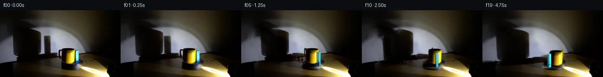
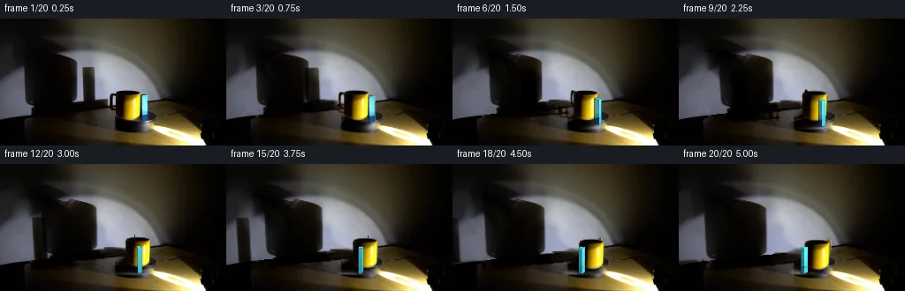
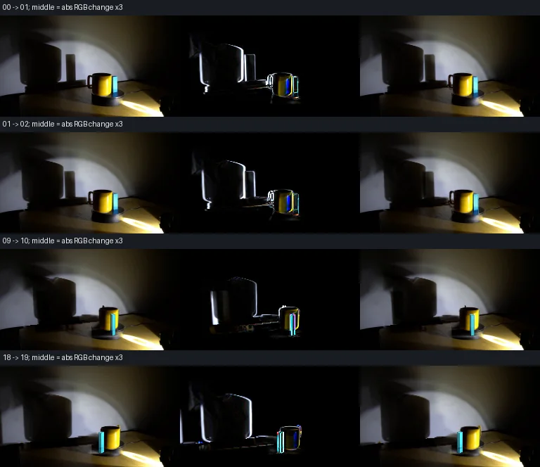

V0 · 初版 · 最终提交
![]()
Observable Generation Trace
把最终像素视频、Harness 冻结的每轮候选、真实工具事件和 Agent 自述放在同一页。可观测证据与模型自述分开标记，避免把“模型说它检查过”误当成真实工具调用。
![首帧]()
Static locked-off single-shot with fixed frame throughout filmed with constant framerate in real-time. The scene shows a realistic scientific demonstration. The scene only contains the described setup and actions. The yellow mug and the blue rectangular block sit on the black, clockwise-rotating platform, and the spotlight points toward the yellow mug and the block. The yellow mug and the blue rectangular block are rotating clockwise around the center of the black rotating platform, while the spotlight casts a large shadow on the wall behind it.
首帧显示在左侧播放器初始画面。Track 权限、隔离和 tensor 一致性来自 run manifest，而不是 METHOD.md。
默认勾选初版和最终版；可选其他版本一起同步播放。仅检查图更新的连续重复快照已合并，回退旧视频仍保留为一次修订。
Observable events
来源：events.jsonl + run manifest
此 Track 禁止读取输出图片。逐轮预览由外部 Harness 自动冻结，只用于事后审计，生成 Agent 当时看不到这些页面。
Frozen candidates
每张图来自该 round 的真实 00 / 01 / 05 / 10 / 19 帧

pixels ef1cd624d1fd0094 · code 2515c759839df07f
--- previous/generate.py
+++ current/generate.py
@@ -0,0 +1,306 @@
+"""Deterministic source-pixel continuation; local mathematical image operations only."""
+from pathlib import Path
+import json
+import numpy as np
+import cv2
+from PIL import Image, ImageDraw
+from scipy.interpolate import RBFInterpolator
+from scipy.ndimage import gaussian_filter
+import artifact_io
+
+ROOT=Path(__file__).resolve().parent
+W,H=256,144
+SOURCE=np.array(Image.open(ROOT/'first_frame.png').convert('RGB'))
+F=SOURCE.astype(np.float64)
+YY,XX=np.mgrid[:H,:W]
+CENTER=np.array([148.,117.])
+Q=.34
+STEP=np.deg2rad(7.)
+
+def polygon(points, blur=0.):
+ im=Image.new('L',(W*4,H*4))
+ ImageDraw.Draw(im).polygon([(round(x*4),round(y*4)) for x,y in points],fill=255)
+ a=np.array(im.resize((W,H),Image.Resampling.LANCZOS)).astype(float)/255
+ return gaussian_filter(a,blur) if blur else a
+
+def dilate(mask,radius):
+ return cv2.dilate((mask>0.035).astype(np.uint8),np.ones((2*radius+1,2*radius+1),np.uint8))
+
+def orbit(p,angle):
+ c,s=np.cos(angle),np.sin(angle)
+ return np.array([c*p[0]-s*p[1],s*p[0]+c*p[1]])
+
+def screen(p,z=0.):
+ return np.array([CENTER[0]+p[0],CENTER[1]+Q*p[1]-z])
+
+def warp(array,matrix):
+ return cv2.warpAffine(array.astype(np.float32),matrix.astype(np.float32),(W,H),flags=cv2.INTER_LINEAR,borderMode=cv2.BORDER_CONSTANT)
+
+def translate(array,delta):
+ return warp(array,np.array([[1.,0.,delta[0]],[0.,1.,delta[1]]]))
+
+def over(canvas,rgb,alpha):
+ return canvas*(1-alpha[...,None])+rgb*alpha[...,None]
+
+# Separate source silhouettes; the hole in the handle contains room pixels.
+MUG=polygon([(143,81.0),(153,81.7),(158.5,83.8),(159.2,86),(158.3,107),
+ (157,111.6),(154.5,113.8),(147,115.5),(139,114.9),(133.5,112.5),
+ (131.5,108),(130.7,87),(132,83.4),(137,81.9)])
+HANDLE_OUT=polygon([(126,84.8),(132.4,85.4),(133.3,103.5),(130,106.3),
+ (125.5,104.2),(123.1,100.2),(123.0,88.3)])
+HANDLE_HOLE=polygon([(127.6,88.7),(130.4,89.6),(130.9,98),(128,99.5),(126.6,97.5),(126.6,91)])
+HANDLE=np.clip(HANDLE_OUT-HANDLE_HOLE,0,1)*(1-MUG)
+BLOCK=polygon([(159.6,87.0),(165.9,85.3),(167.1,86.1),(166.9,112.9),
+ (165.2,116.0),(160.2,116.1),(159.5,108.2)])
+OBJECT_MASK=np.maximum.reduce([MUG,HANDLE_OUT,BLOCK])
+
+# Source shadows have measured irregular outlines, rather than invented new silhouettes.
+MUG_REGION=polygon([(12,18),(30,21),(45,27),(65,34),(87,43),(91,88),
+ (98,91),(123,94),(132,106),(105,111),(34,112),(27,98),
+ (25,65),(13,61)],.65)
+BLOCK_REGION=polygon([(91,53),(109,52),(110,88),(130,94),(133,104),
+ (112,107),(92,102),(90,90)],.5)
+REGION=np.maximum(MUG_REGION,BLOCK_REGION)
+# Interpolate smooth illumination from measured, unshadowed wall pixels.
+wall=YY < (112-.095*XX)
+train=(wall & (REGION<.01) & (OBJECT_MASK<.01) & (XX<207) & (YY>8))
+grid=(XX%3==0)&(YY%3==0)
+pts=np.stack([XX[train&grid],YY[train&grid]],axis=1).astype(float)
+values=F[train&grid]
+rbf=RBFInterpolator(pts,values,kernel='thin_plate_spline',smoothing=12.,neighbors=90)
+query=(REGION>.005)&wall
+lit=F.copy()
+lit[query]=np.clip(rbf(np.stack([XX[query],YY[query]],axis=1)),0,240)
+# Table pixels underneath the original floor shadow are filled from local table texture.
+floor_hidden=(REGION>.02)&(~wall)
+inpaint=cv2.inpaint(SOURCE,(floor_hidden.astype(np.uint8)*255),5,cv2.INPAINT_TELEA).astype(float)
+lit[floor_hidden]=inpaint[floor_hidden]
+# Soft source masks remain naturally darker where the original wall was shaded.
+lit=F+(np.maximum(lit,F)-F)*REGION[...,None]
+log_all=np.clip(np.log((lit+1)/(F+1)),0,4.8)
+# The narrow block silhouette is a separate layer. Partition the overlapping floor tail.
+weight=BLOCK_REGION/(MUG_REGION+BLOCK_REGION+1e-7)
+weight=np.where((XX>90)&(YY<92),1.,weight)
+weight=np.clip(weight,0,1)
+LOG_BLOCK=log_all*weight[...,None]
+LOG_MUG=log_all-LOG_BLOCK
+# Remove source objects from the reconstructed plate. Avoid changing the dark disk rim.
… diff truncated; 219 more lines …Final visual checks
Harness 保存的最终产物


Agent claims
以下文字由生成 Agent 撰写，不等同于工具证据
The supplied image is 256 by 144 RGB pixels. The camera is fixed and looks slightly down at a tabletop. The room is dim, with a broad cool spotlight pool on the wall and a warm beam across the bottom right of the table. The light source is off to the front/right. These room features and the exposure should stay fixed.
The yellow mug has a dark oval opening near (145, 85), a roughly 27-pixel-wide body, and a base near (145, 114). Its left-facing handle occupies approximately x=122–133, y=87–108. The bright yellow portion is mainly x=141–158. Further numerical segmentation finds cyan pixels at x=160–166, y=86–116. The main upright block and its small blue base/reflection will be treated together, with a base near (163.5, 115). The small black turntable is estimated to have its top center near (148, 117), a radius of about 28 pixels, a projected depth ratio near 0.34, and a low dark rim. The mug is near the central/rear portion of the disk; the block is farther out to the right, slightly behind the disk center. These estimates are based on the attached initial view and numerical pixel samples.
The large mug shadow occupies roughly x=27–88, y=25–101 on the wall; the slimmer block shadow occupies approximately x=94–108, y=55–99. Both join the dark shadow near the wall/table boundary. Their offset to the upper left implies a fixed light at the lower right. A moving shadow must reveal the illuminated wall underneath it and retain a soft edge. The wall, tabletop grain, beam, camera, platform outline, and unrelated dark foreground should remain stable.
The continuation will use a constant angular speed of 7 degrees per frame (28 degrees/second), clockwise as viewed from above. The mug and block remain upright, keep their relative placement, and move on the same rigid disk. The mug's handle and the block's side faces rotate with the disk. Contact shading stays under the objects, and large shadows change position and shape with the same rotation. No cuts, new objects, or camera movement are planned.
| Frame | Time (s) | Angle | Planned event |
|---|---|---|---|
| 00 | 0.00 | 0° | Exact original image. |
| 01 | 0.25 | 7° | Small clockwise displacement; shadow edges begin moving. |
| 02 | 0.50 | 14° | Block approaches the right side of the disk. |
| 03 | 0.75 | 21° | Mug handle turns slightly toward the rear. |
| 04 | 1.00 | 28° | Block's additional face becomes visible. |
| 05 | 1.25 | 35° | Both bases follow projected circular paths. |
| 06 | 1.50 | 42° | Block advances through the disk's right/front quadrant. |
| 07 | 1.75 | 49° | Mug handle is progressively foreshortened. |
| 08 | 2.00 | 56° | Wall shadows slide and change silhouette continuously. |
| 09 | 2.25 | 63° | Mug remains near center; block travels farther around it. |
| 10 | 2.50 | 70° | Block begins moving left along the front of the orbit. |
| 11 | 2.75 | 77° | Handle is mostly behind the mug. |
| 12 | 3.00 | 84° | Continuous disk motion; upright objects retain height. |
| 13 | 3.25 | 91° | Quarter-turn passed; handle approaches edge-on. |
| 14 | 3.50 | 98° | Handle begins emerging on the right/back. |
| 15 | 3.75 | 105° | Mug and block shadows remain coupled to position. |
| 16 | 4.00 | 112° | Block continues through the front quadrant. |
| 17 | 4.25 | 119° | Mug handle becomes clearer at the right side. |
| 18 | 4.50 | 126° | Block approaches the front/left portion of its orbit. |
| 19 | 4.75 | 133° | End mid-rotation, with no artificial stop or cut. |
Actual generation will use local Python and deterministic pixel synthesis, including source texture reuse, background reconstruction, geometric projection, shading, and soft shadow masks. All generated outputs will be inspected through numeric checks only; no image Read/View tool will be used.
This is a deterministic local Python continuation of the supplied image. It uses NumPy, Pillow, OpenCV pixel warps/inpainting, and SciPy mathematical interpolation. It does not use a video model, an external renderer, a network service, reference images, or additional scene inputs. The only scene inputs are first_frame.png and prompt.txt.
OBSERVATION.md was written before the generation implementation. It records the initial scene measurements, later refinement of the blue block's base measurement, and the twenty-frame event plan.
There are 20 RGB frames of 256×144 pixels. Playback uses a constant 250 ms interval: 4 fps for 5 seconds. The sample times are 0.00–4.75 seconds, with each frame displayed for 0.25 seconds. frames/00.png is copied directly from the source image and is pixel-exact.
The disk is estimated to have center (148, 117) in image coordinates, with a horizontal world-to-image scale of one pixel/unit and a depth compression of 0.34. A point (X,Y,Z) projects to (148+X, 117+0.34Y−Z). Initial mug and block base coordinates on the disk are (-3,-9) and (15.5,-5.9). Their orbit radii are approximately 9.487 and 16.585 units. Both positions and attached features are rotated by the same matrix, at 7 degrees per frame, for a final angle of 133 degrees. Positive rotation in the top-view screen coordinate system is clockwise. The relative distance between the two objects stays constant.
The camera, room lighting, table, and platform silhouette stay fixed. Subtle reconstructed disk texture is rotated within a fixed soft elliptical mask. The surface outlines and depth scale are estimates from the initial image, rather than calibrated physical measurements.
The mug's original cylindrical body, dark oval opening, yellow highlight, and small base details are isolated with a manually measured antialiased silhouette and translated along the projected orbit. A round, unmarked cylinder presents the same front-facing surface normals to a fixed light as its handle turns, so this source-texture approach preserves the original shading.
The source handle is isolated with an open center and transformed as a vertical plane attached to the mug. Rotation changes its horizontal width and its vertical shear under the oblique camera projection. It is composited behind the mug for this portion of the turn. A small minimum projected thickness approximates ceramic thickness when nearly edge-on. Its dark source colors are gradually tinted toward yellow as the handle emerges toward the light on the right.
The cyan block transitions over the first 28 degrees from a translated source silhouette to an orthographically projected cuboid, approximately 6.5×4×28 units. The visible faces are projected as quadrilaterals and composited in depth order. Its front face reuses the supplied cyan pixels; newly exposed side and top faces use colors sampled from that material with analytic directional shading. A diminishing source-face residual retains the initial highlights. The mug and block are sorted by depth each frame, permitting the block to pass in front of the mug. Soft contact shading remains attached to both bases.
Two manually bounded source shadow regions separate the broad mug shadow from the narrow block shadow. Unshadowed wall samples drive a thin-plate radial-basis interpolator that reconstructs the smooth spotlight illumination where the initial shadow hides it. Local OpenCV inpainting reconstructs floor texture and the areas initially covered by objects.
The original RGB attenuation is recovered as a logarithmic shadow field relative to that illuminated background. A fixed estimated light at (59,80,24) projects toward an estimated wall plane at Y=−141. The ratio (wallY−lightY)/(objectY−lightY) supplies each shadow's change in scale, and the projected ray intersection supplies its displacement. These transformations are normalized to the initial source shadow footprints. The block's apparent shadow width additionally follows its rotating box faces. Bilinear warps and a soft low tail preserve continuous shadow motion.
This is an image-space approximation of changing cast shadows. It preserves source silhouettes and estimates their geometric displacement and magnification; it does not ray-trace a complete recovered three-dimensional room. Uncovered wall/floor pixels are interpolated, so their hidden original texture cannot be recovered exactly.
The initial reconstructed composite has small boundary/material differences from the source. A fixed background correction and a short, exponentially diminishing correction advected with each object's base reduce the initial transition. There is no global scene fade. Frame 00 always uses the exact original source pixels.
Run python generate.py to recreate the frames, tensor, player, contact sheets, and basic numeric report. Run python verify.py afterward to perform the expanded numeric checks and update numeric_checks.json.
pixels.npz: key pixels, shape (144,256,20), dtype uint32, each value 0xRRGGBB.frames/00.png–frames/19.png: twenty RGB PNGs corresponding exactly to that tensor.index.html: self-contained player with the first frame and packed difference packets embedded; a 250 ms playback timer, seek, replay, and loop controls.inspection.png: eight-frame contact sheet, 1024×330 pixels.transition_check.png: four successive-frame comparisons with amplified absolute RGB differences, 768×664 pixels.motion_metadata.json: frame times, rotation angles, projected/world base positions, and shadow affine transforms.numeric_checks.json: output equality, motion constraints, fixed-region checks, material pixel counts, and transition measurements.All twenty PNGs were checked against the packed tensor. The HTML player packets were decoded locally and checked against all twenty PNGs. Checks also confirm the exact source frame, constant clockwise speed, constant orbit radii and relative spacing, bases within the disk, visible yellow/cyan pixels in every frame, distinct successive frames, and exact preservation of the selected spotlight-beam and upper-right room regions.
Successive-frame mean absolute RGB differences range from 1.646 to 3.434 intensity levels over the full frame. The first transition is 2.634, below the maximum later transition. These measurements support temporal continuity but do not establish photorealism.
No generated image or contact sheet was opened with an image Read/View tool. Output inspection consisted only of local code, pixel statistics, geometry checks, and file/packet equality checks. The initial scene observation used the image attached to the request and numerical samples from that source.